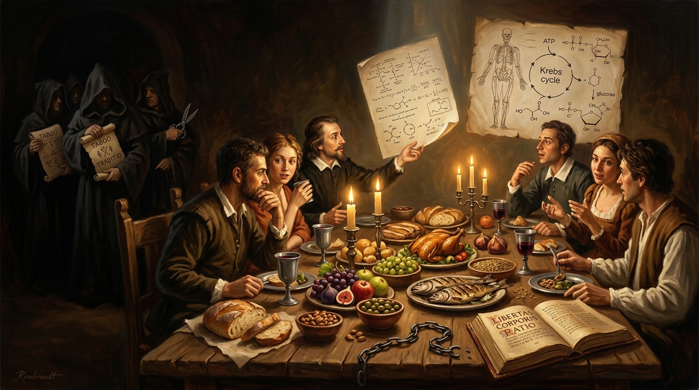

EAT AS THOU WILT SHALL BE THE WHOLE OF THE LAW.
A devastating dissection of religious conditioning, bodily taboos, and ancient dietary guilt — returning human beings to empirical biology, evidence, and sovereignty.

“Eat As Thou Wilt”
Adapted into a slow, punchy, defiant heavy blues crawler in E minor produced in collaboration between The Shady River Bard and Trevor Swistchew (writing under the satirical moniker Aladdin Crewlye). Spoken gritty rhythmic Scottish male verses alternate with soaring soulful female blues choruses, driving drums, walking bass, and weeping bent guitar riffs: “The body ain’t a priest, it don’t know how to pray — it’s a biochemical engine burning through the day.”

The Architecture of Conditioning & The 5 Steps to Getting Un-Lost
Deconstructing inherited myth, religious dietary taboos, and ritual bodily control through the lens of empirical biology.
The 3-Step Conditioning Machine
How inherited dogma systematically marinates the child’s mind before the cognitive tools of doubt and evidence can develop:
As dependent children, we trust those who feed and protect us. When adults pronounce taboos as divine commands, the brain files claims under unquestioned reality.
Repeated incessantly across homes, schools, rituals, and stories. The brain mistakes familiarity for fact: you are handed an ancient script instead of a navigational map.
Obedience becomes purity; curiosity becomes moral disease. The dinner plate becomes a confession booth, and the body becomes a contested battlefield.
You were conned from birth. Not in some vague poetic way, but in a precise, systematic, repeatable way. You were born into a ready made story, a pre cooked belief system, a menu of “truths” that nobody around you ever properly questioned. Before you could walk, talk, or chew solid food, the world around you was already marinating your mind in myth. You were handed rules about God, rules about food, rules about your body, rules about what is “pure” and what is “dirty” and you were expected to swallow them whole, no chewing, no tasting, no testing. This essay will spell out exactly how that happened, and how you get un‑lost.
From the beginning, you were taught that there is a cosmic authority call Him Jimmy in the Sky who cares deeply about what you eat, what you touch, what you do with your body. You were told that certain foods are holy, others are filthy; certain animals are blessed, others are cursed; certain parts of your own flesh are acceptable, others must be cut, trimmed, or “corrected” to please this invisible overseer. You were not invited to ask: How do we know this? You were trained not to ask. Questioning was treated like a sin, curiosity like a disease.
That is conditioning.
Step one: Authority. As a child, you learn that adults know best. They feed you, clothe you, protect you. You depend on them. So when they say, “God doesn’t like pork,” or “This food is unclean,” or “We must cut this part of the body because God wants it,” your brain files it under truth, not claim. You don’t yet have the tools to separate evidence from tradition. You trust. That trust is exploited.
Step two: Repetition. The same ideas are repeated at home, at school, at religious gatherings, in stories, songs, rituals. The more often you hear something, the more “true” it feels. “We don’t eat that.” “We always do this.” “God says so.” The mind starts to confuse familiarity with fact. You are not given a map; you are given a script.
Step three: Fear and belonging. You are told that if you obey, you are good, pure, accepted. If you disobey, you are bad, dirty, rejected by your family, your community, and by Jimmy in the Sky Himself. Food becomes a moral test. Your plate becomes a confession booth. Your body becomes a battlefield. You learn to fear the wrong bite, the wrong choice, the wrong question. You learn to cling to the herd, even when the herd is stampeding towards nonsense.
Gradually, you forget to enquire. You stop asking, “Why this rule?” and start asking only, “How do I obey?” You stop examining the story and start performing it. You become, in effect, a clone another copy of the same pattern, repeating the same lines, enforcing the same taboos, passing them on to the next generation. You might spice your personality with a few quirks, but the core script remains untouched: God cares what you eat; your body must be controlled; tradition is truth.
Now let’s bring in the facts.
The BODY does not care about your religion, your rituals, or your taboos. It has no moral palate. It does not sniff at sinners or swoon at saints. It runs on nutrition : proteins, fats, carbohydrates, vitamins, minerals, water. It doesn’t care whether those molecules come from pork, lentils, fish, or fruit. It doesn’t care whether the food was blessed, cursed, prayed over, or eaten in silence. To the BODY, food is energy not theology.
When you eat, your digestive system breaks down the food into molecules. Those molecules are absorbed, transported, and used to build, repair and fuel your tissues. There is no step in that process where the BODY pauses to ask, “Was this halal?” or “Is this kosher?” or “Did this offend a Deity?"” The BODY is not a priest. It is not a judge. It is a biochemical engine.
The same logic applies to mutilation rituals circumcision, FGM, and other forms of cutting bits off to appease an imagined order. The BODY does not benefit from these acts. They are not medically necessary in the vast majority of cases. They introduce pain, risk, and sometimes lifelong harm. The idea that an all powerful being demands these cuts is a belief, not a fact. It is a story, not a diagnosis. Yet it is enforced on children who cannot consent, cannot question, cannot say, “Show me the evidence.”
You were told these things are sacred. You were not told they are untested claims.
So how did you get lost? By being taught to trust authority over evidence repetition over reason fear over curiosity belonging over truth. You were trained to treat inherited rules as reality. You were conditioned to feel guilt when you even think of questioning them. You were nudged, gently at first and then firmly, away from enquiry and towards obedience. Over time, the habit of questioning atrophied. The muscle of doubt weakened. You became a clone of the culture that raised you.
“Now: how do you get un‑lost? First, you recognise the pattern... Second, you separate claims from facts... Third, you test your beliefs against reality... Fourth, you reclaim your BODY as yours... Fifth, you extend that same logic to others especially children.”
Now: how do you get un‑lost?
First, you recognise the pattern. You say, clearly: I was conditioned. Not in a vague way, but in a specific way by family, school, religion media, tradition. You acknowledge that many of your “truths” were never examined; they were inherited. This is self‑diagnosis.
Second, you separate claims from facts. A claim is “God cares what you eat.” A fact is “The BODY needs certain nutrients to function.” A claim is “This part of the body must be cut to please God.” A fact is “Cutting healthy tissue without medical need introduces risk and pain.” You start asking, for every belief: What is the evidence? Not “Who said it?” Not “How long has it been believed?” but “What supports it in reality?”
Third, you test your beliefs against reality. If someone says, “This food is morally dirty,” ask: Does it harm the BODY? If someone says “This ritual is necessary,” ask: What happens if it is not done? If someone says, “God demands this,” ask: How do you know? You stop treating tradition as proof. You stop treating fear as guidance. You start treating reality as the reference point.
Fourth, you reclaim your BODY as yours. Not the property of a tribe, not the canvas for an ancient script, not the object of someone else’s theology. You recognise that your BODY is a living system that responds to nutrition, rest, movement, and care—not to taboos, curses, or blessings. You feed it based on health, not superstition. You protect it based on evidence, not myth.
Fifth, you extend that same logic to others especially children. You refuse to participate in cutting, shaming, or controlling their bodies based on untested beliefs. You choose the milk of kindness over the marinade of fear. You decide that no imaginary order from an unknown Stone Age belief justifies permanent changes to a child’s flesh.
This is how you get un‑lost: by returning, step by step, to reality. You are capable of seeing through conditioning. You are capable of choosing health over myth, evidence over fear, autonomy over obedience.
You were conned from birth. That is not your fault. Staying conned, once you see the pattern that’s a choice.
Eat as thou wilt, in the true sense: choose what nourishes you, physically and mentally. Question every rule that claims divine authority over your plate or your body. Refuse to be a clone. Refuse to be led by someone else’s superstition. Refuse to let fear season your life.
You get un lost by doing the one thing you were trained not to do you start asking why.